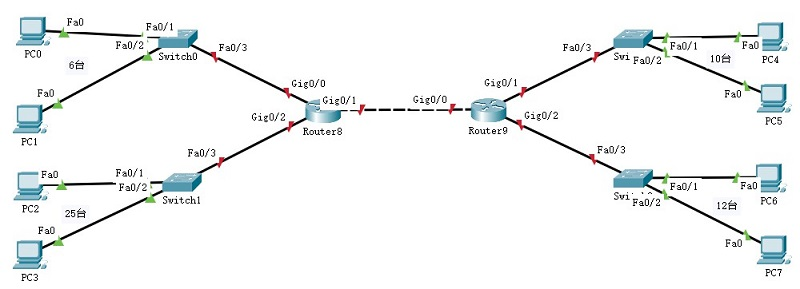

| network prefix | host ID |
|---|---|
| n bit | (32-n)bit |
| 128 | 14 | 35 | 7 |
| 1000 0000 | 0000 1110 | 0010 0011 | 0000 0111 |
| IP地址 | 128 | 14 | 35 | 7 |
| 二进制 | 1000 0000 | 0000 1110 | 0010 0011 | 0000 0111 |
| 地址掩码 | 1111 1111 | 1111 1111 | 1111 0000 | 0000 0000 |
| 网络地址 | 1000 0000 | 0000 1110 | 0010 0000 | 0000 0000 |
| 广播地址 | 1000 0000 | 0000 1110 | 0010 1111 | 1111 1111 |
| 分类 | 地址掩码 | CIDR形式的地址掩码 |
|---|---|---|
| A类 | 255.0.0.0 | 255.0.0.0/8 |
| B类 | 255.255.0.0 | 255.255.0.0/16 |
| C类 | 255.255.255.0 | 255.255.255.0/24 |
| 2 7 | 2 6 | 2 5 | 2 4 | 2 3 | 2 2 | 2 1 | 2 0 |
| 128 | 64 | 32 | 16 | 8 | 4 | 2 | 1 |
- 地址掩码
- 地址块数量
- 网络地址
- 最小主机地址
- 最大主机地址
- 广播地址
- 聚合C类网络的数量
| 地址掩码 | 1111 1111 | 1111 1111 | 1111 0000 | 0000 0000 | 255.255.240.0 |
| IP地址 | 128 | 14 | 0010 0011 | 0000 0111 | 128.14.35.7 |
| 网络地址 | 128 | 14 | 0010 0000 | 0000 0000 | 128.14.32.0 |
| 最小主机地址 | 128 | 14 | 0010 0000 | 0000 0001 | 128.14.32.1 |
| 最大主机地址 | 128 | 14 | 0010 1111 | 1111 1110 | 128.14.47.254 |
| 广播地址 | 128 | 14 | 0010 1111 | 1111 1111 | 128.14.47.255 |
| 聚合C类地址数量 | 232-20 / 28 = 24个 | ||||
| 地址掩码 | 1111 1111 | 1111 1111 | 1111 1111 | 1111 1100 | 255.255.252.0 |
| IP地址 | 192 | 168 | 4 | 0000 0000 | 192.168.4.0 |
| 网络地址 | 192 | 168 | 4 | 0000 0000 | 192.168.4.0 |
| 最小主机地址 | 192 | 168 | 4 | 0000 0001 | 192.168.4.1 |
| 最大主机地址 | 192 | 168 | 4 | 0000 0010 | 192.168.4.2 |
| 广播地址 | 192 | 168 | 4 | 0000 0011 | 192.168.4.3 |

| 网络前缀 | 24 bit |
| 主机位 | 32-24=8 bit |
| 主机数量 | 28=256 个 |
| 用户数量 | 6+25+12+10=53 个 |
| 结论 | 256 > 53；地址块够用 |
| 网络数量 | 4+1 | ||
| 各子网需求 | |||
| 子网号 | 主机个数 | 路由端口个数 | IP地址个数 |
| 1 | 6 | 1 | 6+1+2 |
| 2 | 25 | 1 | 25+1+2 |
| 3 | 12 | 1 | 12+1+2 |
| 4 | 10 | 1 | 10+1+2 |
| 5 | 0 | 2 | 0+2+2 |
| 子网号 | IP地址个数 | 主机位 | 网络前缀 |
| 1 | 9 | 4 bit | 28 bit |
| 2 | 28 | 5 bit | 27 bit |
| 3 | 15 | 4 bit | 28 bit |
| 4 | 13 | 4 bit | 28 bit |
| 5 | 4 | 2 bit | 30 bit |
| 218.75.230.0/24 | |||||
| 子网2 | 网络号 | 218 | 75 | 230 | 0 |
| 最小主机地址 | 218 | 75 | 230 | 1 | |
| 最大主机地址 | 218 | 75 | 230 | 30 | |
| 广播地址 | 218 | 75 | 230 | 31 | |
| CIDR地址块 | 218.75.230.0/27 | ||||
| 子网1 | 网络号 | 218 | 75 | 230 | 32 |
| 最小主机地址 | 218 | 75 | 230 | 33 | |
| 最大主机地址 | 218 | 75 | 230 | 46 | |
| 广播地址 | 218 | 75 | 230 | 47 | |
| CIDR地址块 | 218.75.230.32/28 | ||||
| 子网3 | 网络号 | 218 | 75 | 230 | 48 |
| 最小主机地址 | 218 | 75 | 230 | 49 | |
| 最大主机地址 | 218 | 75 | 230 | 62 | |
| 广播地址 | 218 | 75 | 230 | 63 | |
| CIDR地址块 | 218.75.230.48/28 | ||||
| 子网4 | 网络号 | 218 | 75 | 230 | 64 |
| 最小主机地址 | 218 | 75 | 230 | 65 | |
| 最大主机地址 | 218 | 75 | 230 | 78 | |
| 广播地址 | 218 | 75 | 230 | 79 | |
| CIDR地址块 | 218.75.230.64/28 | ||||
| 子网5 | 网络号 | 218 | 75 | 230 | 80 |
| 最小主机地址 | 218 | 75 | 230 | 81 | |
| 最大主机地址 | 218 | 75 | 230 | 82 | |
| 广播地址 | 218 | 75 | 230 | 83 | |
| CIDR地址块 | 218.75.230.80/30 | ||||
| 剩余地址 | ... | 218 | 75 | 230 | 84 |
| ... | ... | ... | ... | ... | |
| ... | 218 | 75 | 230 | 255 | |